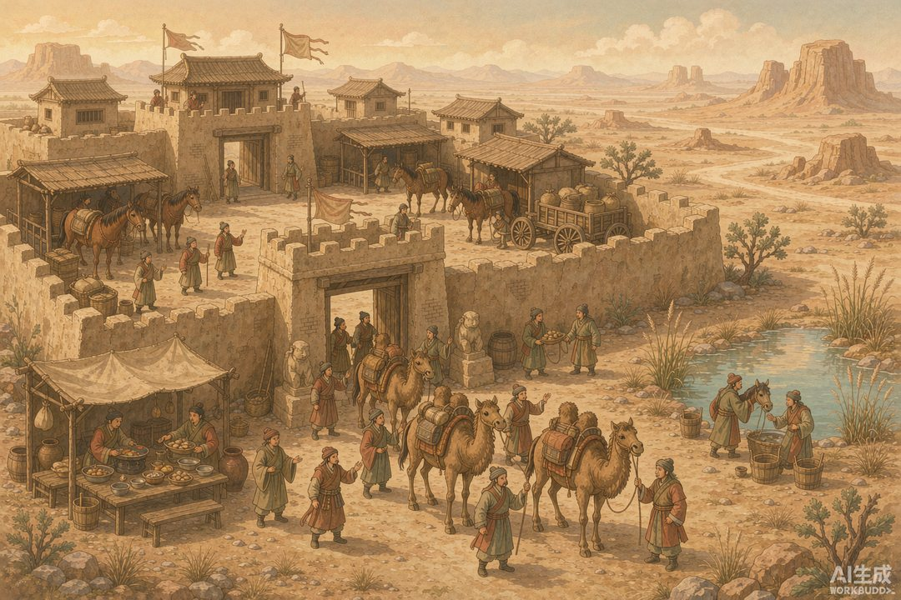

|
《信息传播那些事儿》卷二 · 竹简与封泥 · 第 21 篇 |
|
汉代驿置：公文为什么比私信快 —— 帝国最密的网，永远只优先服务一种邮件 |
|
红头巾、白文囊——汉代信使的工装，在驿路上就是移动的加急标志（AI 生成示意图） |
|
秦帝国十五年就垮了，但它留下的信息系统，被汉朝全盘接收，还扩建成了超级工程。一个两千年前的"国营快递+招待所"网络，如何做到公文日行四百里、延误要追责？这一篇，去戈壁滩上的一座驿站遗址里找答案。 |
一 | 五里一邮、十里一亭、三十里一置 |
汉代把信息高速公路修成了四级网络：五里设邮，十里设亭，三十里设驿或置。"置"是其中规格最高的——相当于今天把高速服务区、快递分拨中心和政府招待所合三为一。
一个"置"有多少家底？多亏一处遗址，我们知道了确切数字。
1990 年起，考古学家在甘肃敦煌的戈壁滩上，发掘出代号"悬泉置"的汉代驿站遗址：总面积超过两万平方米，有办公区、住宿区、马厩和瞭望角楼；编制工作人员三十七人，配备传车十五辆、传马四十匹，一次最多能接待五百人食宿。放在今天，这是一家位于无人区、全年无休的国道服务区。
这个名字也有讲究："悬泉"是当地一眼沙漠清泉的名字，"置"则是秦汉对邮驿机构的官方称呼。沙漠里有泉，泉边有驿站，驿站里永远备着粮草和快马——这就是帝国伸向边疆的每一根毛细血管的末端。
|
 |
|
悬泉置复原图景：两万平方米的院子，37 个人、40 匹马，撑起丝路东段的信息枢纽（AI 生成示意图） |
二 | 沙漠里挖出两万枚"工作日志" |
悬泉置真正让考古界沸腾的，不是建筑，是纸——准确说，是一万五千多枚汉简。
这座驿站的两千年"工作日志"几乎完好地留了下来：谁某天路过、吃了几斤粮、用了哪匹马、公文几点到几点发，全部记账。其中一份《过长罗侯费用簿》足足写了十八枚简，记录了公元前 61 年长罗侯常惠率三百八十人的使团途经悬泉置的接待明细：牛羊肉、鸡、鱼，外加美酒二十石——原来两千年前就有"公务接待标准"这回事，而且要留痕审计。
接待过载也不是没有过。简牍记载，西域于阗国的国王路过，随行队伍多达一千零七十四人——五百人接待能力的驿站，硬是超负荷撑了下来。对帝国来说，驿站接待的不是客，是情报与忠诚的流动。
更妙的是文书防伪：邮件要登记去向、数量、种类、交接人、时间，竹简上还用刻齿技术——在简的边缘刻出齿痕，两简相合齿口对上，才证明是真的。这大概是最早的"验证码"。
三 | 留迟与不中程：延误是要追责的 |
这套网络的可怕之处，在于它的考核制度。
文书按紧急程度分档：慢件的走步递（"以邮行"），加急的骑马（"马驰行"），最急的车马快传一路换马不换人。速度标准写死在制度里：马传日行三四百里，车传日行七十里。文书送达后逐项检查：及时吗？丢件吗？封泥完好吗？全部合格叫"中程"，超时叫"留迟"或"不中程"——一旦留迟，层层追责，经手的每个驿卒都要说清楚时间差。
实际跑出来什么水平？汉宣帝时，名将赵充国在金城（今兰州一带）向长安发奏疏请示军事，奏疏加上批复返回，前后只用了七天。单程六七百公里，来回带等批复，七天——这就是"中程"制度的实际交付能力。
邮差本人也是行走的制度：统一着装，红头巾、红袖套，背赤白色的文书囊，在驿路上远远就能认出来。配送时限、绩效追责、统一工装、交接签收——把这套东西翻译成现代词汇，你会心一笑：这不就是物流行业的标准操作流程吗？两千年前的汉朝，已经把"次日达"的考核体系跑通了，只是送的下一站是墨和竹简。
|
换马不换件：信使疲惫下马，文书囊立即转交新人——公文在驿站间永远保鲜（AI 生成示意图） |
四 | 为什么公文永远比私信快 |
那么问题来了：这张日行四百里的信息网，老百姓能用吗？
答案是很有限。汉代的平民书信，只能"通过邮路捎带一部分"——顺路搭个便车，什么时候到看运气。官方文书的优先级永远最高：政令要下得去，边关军情要上得来，哪个郡出了苗头，中枢要最先知道。信息网从设计之初就是统治的神经网络，每个节点上的马匹、粮草、人员编制，都是财政为"统治效率"支付的专门预算。
这就是本篇的知识点：公域信息网，永远优先服务于统治。技术本身不分贵贱，但调度权在谁手里，带宽就流向谁。驿站里最快的那匹马，永远不会留给一封家书。
不过，光有纵向的信息网还不够。帝国打了一场大胜仗，怎么让全国百姓都知道、都振奋？驿站负责"递"，可"广而告之"还需要另一种东西——把胜利写在布上，挂到城门口去。下一件文物，是一块布。
本篇数字锚点 |
|
30 里 一座"置"的间距 |
37 人 悬泉置编制（配传车 15 辆、传马 40 匹 |
|
|
7 天 赵充国金城—长安 |
1.5 万枚 悬泉置出土汉简数量 |
|
下篇预告 · 第 22 篇 《汉唐布告与露布：胜利要挂在城墙上》——捷报写在帛上高悬城门，让全城百姓抬头就能看到。信息不仅要传得快，还要传得响。古代版"头条推送"，是怎么操作的？ |
史料参考：《汉书·赵充国传》，悬泉置遗址考古发掘简报与相关研究（甘肃文物考古研究所）；本文配图为 AI 生成示意图。